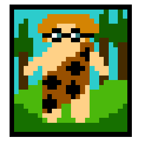
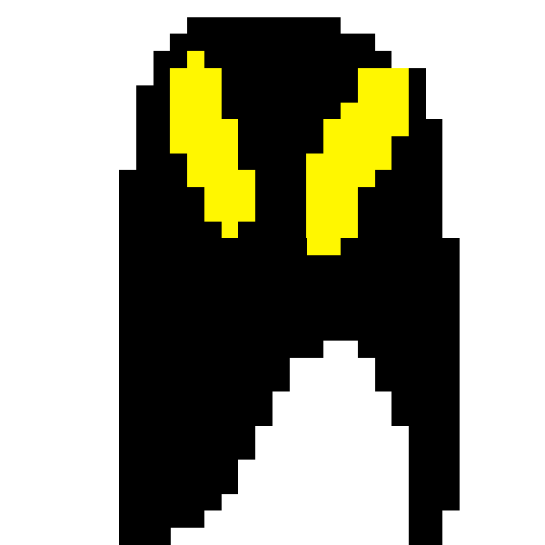

Bristall Croyd is the scientist of the village. He is the crazy man who made weird inventions. He was the smartest caveman to ever exist in the Cavepeople Galaxy. He was going to make something amazing before he died but someone else bought the plans maybe the person who was going to use them to destroy the multiverse and rule it. The plans were for the monster summoner, it was ment to protect the cavepeople instead he(the person who bought the plans) was going to use it to take over the multiverse. Then it was someone unexspected. Warning don't read past this point if you don't spoilers: In the final boss battle you'd discover that it was Bristall Croyd who bought the plans and faked his death so he could take over the multiverse for himself, and watches from above and sees you battle the last boss. To deafeat the bosses you'll have to break the ground under them. Just prepare for this exciting devlopment in the game. The guy under this paragraph is Bristall Croyd's Disquise.
